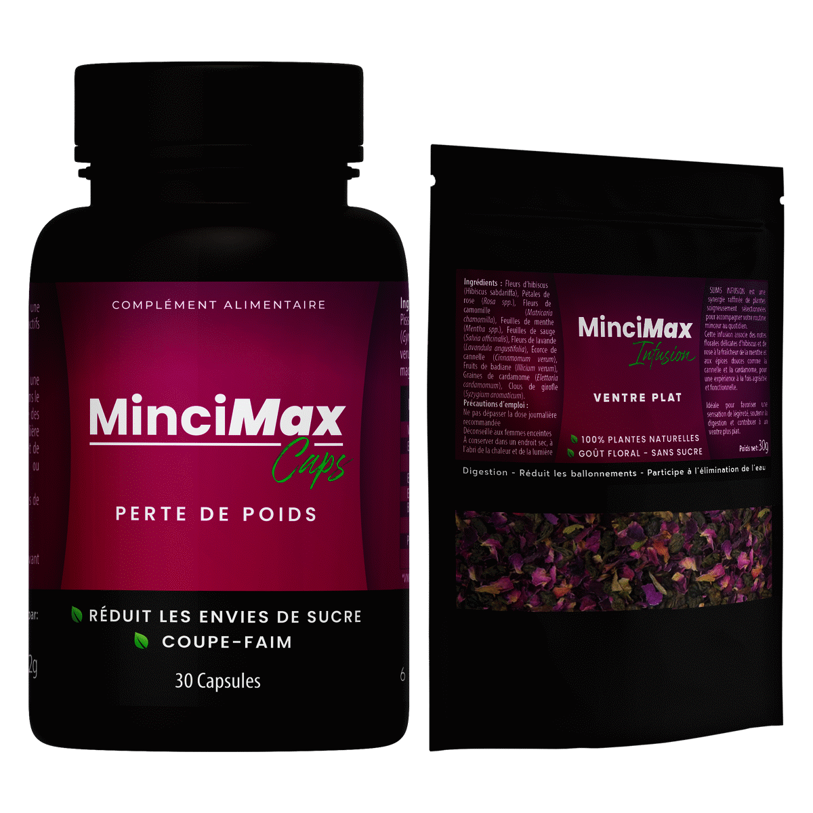

À propos
Herbal Vitaly sélectionne des actifs végétaux et des formules lisibles pour un usage quotidien responsable. Qualité, transparence des informations et accompagnement jusqu’à la livraison font partie de notre engagement.
Ventre plat,
silhouette affinée naturellement
Duo Capsules Coupe-Faim + Tisane Ventre Plat · Gymnema, Chrome, Cannelle, Hibiscus, Fenouil.

MINCIMAX combine des capsules coupe-faim et une tisane ventre plat pour agir en synergie sur la silhouette et le confort digestif.
Formule à base de Gymnema, Chrome et Cannelle pour réduire les envies de sucre, réguler la glycémie et soutenir le métabolisme des graisses.
Tisane 100% plantes naturelles à base d'Hibiscus, Fenouil, Camomille et Menthe pour réduire les ballonnements et favoriser un ventre plat.
L'association capsules + tisane décuple les résultats. Une approche double action interne et externe pour une silhouette visible plus rapidement.
Des actifs naturels sélectionnés pour leur efficacité et leur sécurité d'utilisation, dans les deux formules MINCIMAX.
── Capsules Minceur ──
Gymnema sylvestre
Plante ayurvédique reconnue pour réduire l'absorption du sucre dans l'intestin et diminuer les envies de sucreries. Aide à contrôler la faim naturellement.
Chromium picolinate
Minéral essentiel qui régule la glycémie et réduit les fringales soudaines. Contribue au bon fonctionnement de l'insuline et au contrôle du poids.
Cinnamomum verum
Épice aux propriétés hypoglycémiantes reconnues. Équilibre le taux de sucre sanguin, limite le stockage des graisses et soutient le métabolisme énergétique.
Cichorium intybus · Zingiber
L'inuline (fibre prébiotique) procure une satiété durable et nourrit la flore intestinale. Le Zinc et la Vitamine B5 soutiennent le métabolisme et la production d'énergie.
── Tisane Ventre Plat ──
Hibiscus sabdariffa (Karkadé)
Fleur riche en antioxydants qui réduit la rétention d'eau, soutient la combustion des graisses et apporte une couleur et un goût floral naturels à la tisane.
Foeniculum vulgare
Plante carminative par excellence. Favorise l'expulsion des gaz intestinaux, atténue les gonflements abdominaux et améliore le confort digestif après les repas.
Matricaria chamomilla
Fleur aux vertus apaisantes et anti-inflammatoires. Calme les spasmes digestifs, soulage le ventre gonflé et favorise la détente du système gastro-intestinal.
Mentha piperita · Salvia officinalis
La Menthe calme l'estomac et réduit les gaz. La Sauge apaise le ventre, soutient la digestion et contribue à réduire la rétention d'eau pour un ventre plus plat.
Le Gymnema et le Chrome agissent en synergie pour stabiliser la glycémie, couper les fringales et rendre les sucreries moins attrayantes naturellement.
La tisane au Fenouil, Camomille et Hibiscus agit directement sur les causes des ballonnements : gaz, rétention d'eau et inflammation digestive.
La Cannelle et le Zinc + B5 soutiennent le métabolisme énergétique pour aider l'organisme à brûler les calories plus efficacement sans stimulants de synthèse.
Aucun additif chimique, aucun sucre ajouté. MINCIMAX est formulé à partir d'extraits végétaux purs et de plantes séchées tracées, goût floral naturel.
Prenez 2 capsules MINCIMAX avec un grand verre d'eau 30 min avant le petit-déjeuner.
Infusez 1 cuillère à café de tisane MINCIMAX Drink dans 250ml d'eau chaude pendant 5 minutes.
Buvez la tisane après le déjeuner ou le dîner pour favoriser la digestion et réduire les ballonnements.
⚠️ Convient aux adultes en bonne santé. Déconseillé aux femmes enceintes ou allaitantes. Tenir hors de portée des enfants. Ne pas dépasser la dose journalière recommandée. En cas de traitement médical (notamment antidiabétiques), consultez votre médecin avant utilisation.
Des retours authentiques de personnes qui ont intégré MINCIMAX dans leur routine bien-être.
« La tisane est délicieuse, mon ventre dégonfle vraiment après chaque tasse. En combinant avec les capsules, j'ai perdu 3 cm de tour de taille en 3 semaines. »
« J'avais tout le temps envie de sucré. Depuis que je prends les capsules MINCIMAX, ces envies ont vraiment diminué. Je me sens moins ballonnée et plus légère ! »
« Produit 100% naturel, livraison rapide. La cure complète fonctionne vraiment bien. Mon transit s'est amélioré et j'ai moins cette sensation de ventre gonflé le matin. »
* Les témoignages reflètent des expériences individuelles. Les résultats peuvent varier d'une personne à l'autre.
Disponible en Tunisie. Livraison rapide et sécurisée partout sur le territoire.
Compléments alimentaires et soins formulés avec exigence — sans promesses médicales irréalistes.
Herbal Vitaly sélectionne des actifs végétaux et des formules lisibles pour un usage quotidien responsable. Qualité, transparence des informations et accompagnement jusqu’à la livraison font partie de notre engagement.
Livraison en Tunisie ; délais selon votre région. Paiement à la livraison le plus souvent. Échange ou remboursement selon l’état du colis et nos CGV.
Données de commande / contact uniquement, pas de revente. Cookies techniques et analytics éventuels. Droits d’accès ou de suppression via Contact — détails : politique.
Ces produits ne remplacent pas un avis médical. Résultats variables. Réservé aux adultes (18+), sauf mention contraire. En cas de doute, consultez un professionnel de santé. Mentions légales.
Service client Herbal Vitaly — utilisez le formulaire ci-dessous ou la page Contact. Coordonnées téléphone / e-mail / WhatsApp : infos à venir.
Tunis, Tunisie
Téléphone, e-mail et WhatsApp : infos à venir — en attendant, passez par le formulaire Contact.
Lun – Sam : 9h00 – 18h00